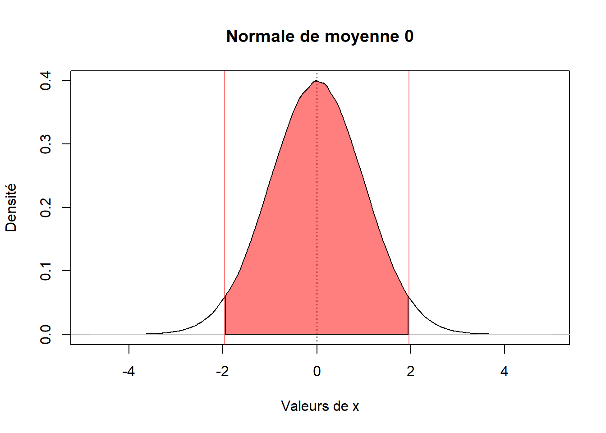
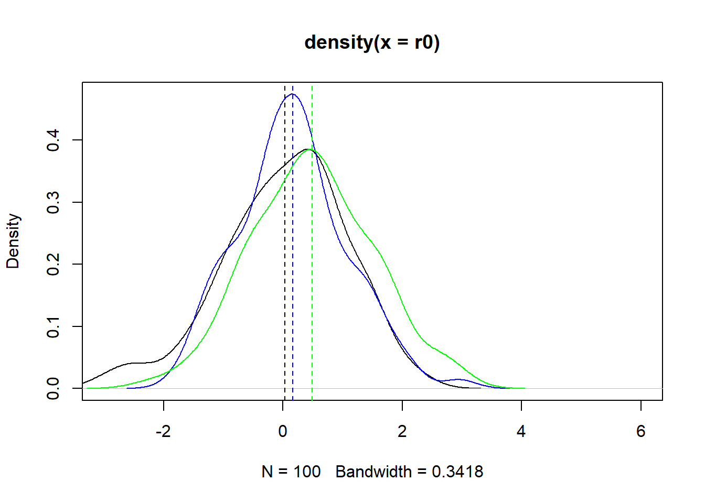
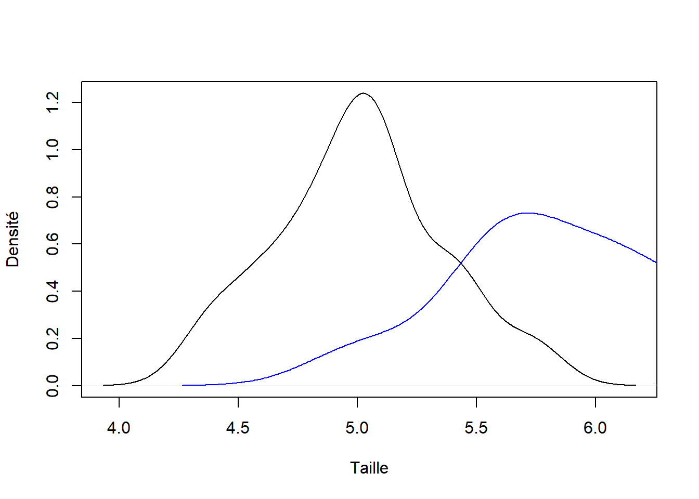

Chapter 3 Tests
3.1 Convergence vers la loi normale
Si on tire des échantillons aléatoirement, alors la moyenne de ces échantillons va converger vers une loi normale de moyenne m et d’écat-type sigma.
3.2 Test Z
Le test Z est le calcul de la position de la loi normale par rapport à ces quantiles.
On prend une variable que l’on centre/réduit si besoin. Alors si on moins de xx % de chances que la moyenne se trouve entre les valeurs (positives et négatives) des quantiles alors la différence entre la moyenne de la loi normale réduite est différente de m, une valeur théorique fixée.
Schématiquement on utilise les quantiles de la loi normale. Si la moyenne se distribue comme une loi normale alors, entre doit se trouver avec une confiance de 95% entre les deux quantiles qui englobe 95% des observations d’une loi normale.
On a :
100 - 95 = 5%
Comme on tient compte des observations à gauche et à droite alors on a le quantile de 2,5% à gauche et 97,5% à droite.
y=rnorm(1000000,0,1)
dd=density(y)
plot(dd,main="Normale de moyenne 0",xlab="Valeurs de x",ylab="Densité")
abline(v=0,lty=3)
abline(v=0-1.96*sd(y),lty=1,col=rgb(1,0,0,0.5))
abline(v=0+1.96*sd(y),lty=1,col=rgb(1,0,0,0.5))
polygon(c(dd$x[dd$x>-1.96 & dd$x<1.96],rev(dd$x[dd$x> -1.96 & dd$x<1.96])),c(rep(0,length(dd$y))[dd$x> -1.96 & dd$x<1.96],rev(dd$y[dd$x> -1.96 & dd$x<1.96])),col=rgb(1,0,0,0.5))
Le test est donc :
Si la distribution de la moyenne suit une loi normale centrée/réduite, sous l’hypothèse nulle que m = m0 alors si m est compris entre -1,96 et 1,96 alors m n’est pas différent de m0.
Sinon m est différent de m0 avec un seuil de 5%.
set.seed(42)
r0 <- rnorm(100)
r1 <- rnorm(100,mean=0.25)
r3 <- rnorm(100,mean=0.5)
plot(density(r0),xlim=c(-3,6),ylim=range(c(density(r0)$y,density(r1)$y,density(r3)$y)))
abline(v=mean(r0),lty=2)
points(density(r1),col="blue",type = "l")
abline(v=mean(r1),lty=2,col="blue")
points(density(r3),col="green",type = "l")
abline(v=mean(r3),lty=2,col="green")
## [1] 1.797402## [1] FALSE## [1] 4.814414## [1] TRUEQuestion : que se passe-t-il si on fait un test seulement à droite ou seulement à gauche ? C’est à dire si on s’intéresse non pas au cas où m est autour de m0 mais si m est plus grand que m0 ou plus petit que m0.
3.3 Test de Student
Le test de Student est similaire au test Z, il est même identique dans certains cas.
Les test de Student a deux fonctions :
tester si une variable a une moyenne différente de m0.
test si les moyenne de deux variables sont différentes
On reconnait le premier cas qui est le test Z. D’ailleurs ont retrouve la même valeur pour le test :
##
## One Sample t-test
##
## data: r1
## t = 1.7974, df = 99, p-value = 0.07532
## alternative hypothesis: true mean is not equal to 0
## 95 percent confidence interval:
## -0.01689135 0.34192394
## sample estimates:
## mean of x
## 0.1625163Le test de Student est proche de l’ANOVA. En fait les résultats sont identiques quand il y a l’argument var.equal=TRUE.
Il signifie que les variances des variables sont identiques.
Un exemple du test de Student, n’est pas sur deux variable séparée mais entre deux catégories d’individus qui forme chacun une population :
t.test(
iris$Sepal.Length[iris$Species=="setosa"],
iris$Sepal.Length[iris$Species=="versicolor"],
var.equal = T
)##
## Two Sample t-test
##
## data: iris$Sepal.Length[iris$Species == "setosa"] and iris$Sepal.Length[iris$Species == "versicolor"]
## t = -10.521, df = 98, p-value < 2.2e-16
## alternative hypothesis: true difference in means is not equal to 0
## 95 percent confidence interval:
## -1.1054165 -0.7545835
## sample estimates:
## mean of x mean of y
## 5.006 5.936Le résultat est assez intuitif si on regarde le graphique des deux distributions :
plot(density(iris$Sepal.Length[iris$Species=="setosa"]),type="l",main="",
xlab="Taille",ylab="Densité")
points(density(iris$Sepal.Length[iris$Species=="versicolor"]),type="l",col="blue")
Pour résumer un test statistique est caractérisé :
par des prérequis de travail (le plus souvent la normalité, égalité des variances, etc.).
des hypothèses pour le test qui définir les conclusions que l’on peut tirer du test. A votre niveau les hypothèses sont le plus souvent binaires. Oui/non : H0 contre H1.
le calcul de la valeur du test qui va être comparé aux “tables” de valeurs
le calcul des degrés de liberté
la conclusion du test : acceptation/rejet de H0 et idem pour H1.
Certaines statistiques dites “bayésiennes” fonctionnent différemment. Elles touchent surtout la façon de définir et de calculer les tests. La méthode décrite ici est appelé, à l’opposé de bayésiennes, la méthode fréquentiste.
3.4 Erreur de Type I et II
L’erreur de type I est : une erreur de type I survient dans un test d’hypothèse statistique lorsqu’une hypothèse nulle, qui est en réalité vraie, est rejetée par erreur. Les erreurs de type I sont également connues sous le nom de “faux positifs”, elles représentent la détection d’un effet positif alors qu’il n’existe aucun effet en réalité.
L’erreur de type II est : le risque de ne pas démontrer que deux groupes sont différents alors qu’ils le sont dans la réalité.
La puissance est 1 - l’erreur de type II.
Par exemple, dans le cadre d’une étude randomisée en double aveugle pour le développement d’un nouveau médicament, le risque de 2e espèce β peut être la probabilité de conclure qu’un médicament n’est pas meilleur qu’un placebo alors qu’il l’est. Dans ce cas, la puissance du test serait la probabilité de conclure que le médicament est meilleur que le placébo, ce qui est vrai.
3.5 Tests “paramétriques” et non paramétriques
Dans le premier cas, tests paramétriques, ce sont les tests que l’on vient de voir. Il repose sur des hypothèses de distribution : en l’occurence ici que les données suivent une loi normale avec des paramètres : la moyenne et l’écart-type. Le test ne “fonctionne” donc que dans le cas où ces trois élements sont présents et corrects statistiquement.
Par exemple, si la distribution est très asymétrique, l’écart-type, la moyenne et la loi normale ne sont pas au rendez-vous alors il faut se tourner vers d’autres tests, en général des tests dits non-paramètriques.
Ces tests ne font pas d’hypothèse sur la distribution. Par exemple pour le test de Student, l’équivalent est le test de Wilcoxon-Mann-Whitney.
Ce dernier pour illustrer le propos est basé sur les rangs des observations plutôt que sur la valeur. Comme la médiane, cela rend le test plutôt robuste à l’asymétrie et aux valeurs extrèmes.
L’inconvénient de ces tests est que pour un type I donné la puissance est plus faible : on a des chances plus faibles de détecter un vrai positif qu’avec
3.6 Précautions à prendre quand on travaille avec des tests
Ces préquis sont à vérifier avant de faire le test
Il faut comparer le nombre de degrés de liberté avec le nombre d’observations. En effet il y a des “rules of thumb” qui définissent le nombre de degrés de liberté en fonction du nombre d’observations. Par exemple pour les analyses structurales il faut de 20 à 40 observations minimums par degré de liberté.
Le choix est binaire. la p-value ne donne pas de renseignements sur la “force” du test.
Le choix de la valeur seuil de la p-value doit être fait en amont et doit être contrôlé par des procédures statistiques si vous calculez de nombreux tests : cela s’appele correction de Bonferroni, Tukey, etc.